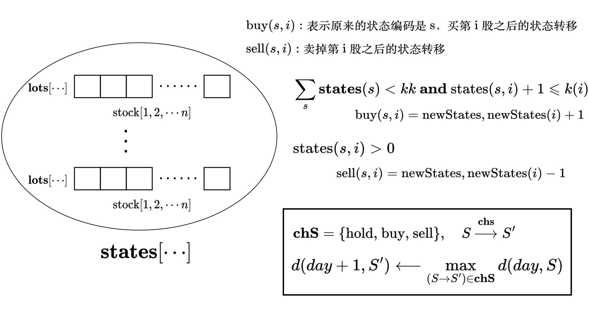

本文重点讲一下状态压缩类dp
和复杂状态下的动态规划问题处理方法
状态压缩dp
最优配对问题
最优配对问题
空间里有 n 个点 P0,P1,⋯,Pn−1
将他们配对成 2n 对，使得每个点恰好在一个点对中
所有点对中的两点距离之和尽量小
先写出状态转移方程
以配对的点作为 dp 的阶段
当前已经配对了 i−1 个点，正在配对第 i 个点
可以用状态压缩的方法，当前点在不在集合 S 中，可以用二进制表示
d(i,S)mind(i−1,S−{i}−{j})+∣PiPj∣ d(i,S)=j∈[0,i−1]min{∣PiPj∣+d(i−1,S−{i}−{j})}
1
2
3
4
5
6
7
8
9
10
11
12
13
14
|
void initdp() {
memset(d, -inf, sizeof(d));
d[0][0] = 0;
}
void dp() {
for(int i = 0; i < n; i++) {
for(int S = 0; S < (1<<n); S++) {
for(int j = 0; j < i; j++) if(S & (1<<j))
d[i][S] = max(d[i][S], dist(i, j) + d[i-1][S^(1<<i)^(1<<j)]);
}
}
}
|
然后可以对代码进行等价变形
i 是 S 中第一个不为 0 的位
也就是说，第一个存在于 S 中的元素
j∈[i+1,n)
1
2
3
4
5
6
7
8
9
| void dp() {
for(int S = 0; S < (1<<n); S++) {
int i, j;
for(i = 0; i < n; i++) if(S & (1<<i))
break;
for(j = i + 1; j < n; j++)
if(S & (1<<j)) D[S] = max(D[S], dist(i, j) + D[S^(1<<i)^(1<<j)]);
}
}
|
TSP问题
n 个城市，两两有道路相连，给出两个城市 i,j 的道路长度 L(i,j)
求一条经过每个城市仅一次，最后回到起点的路线，使得经过的道路总长度最短
这个问题仍然可以用一个状态压缩表示集合
当前 dp 的阶段是决策点 i
已经加入决策的集合，就是已经路过的点构成集合 S
d(i,S)=j∈Smin{d(j,S−{i})+dist(i,j)}
st: for ∀i,d(i,{})=dist(0,i) ed: d(0,{1,2,⋯,n−1})
图的色数
给一个无向图 G，把图中的节点染成尽量少的颜色，使得相邻节点的颜色不同
用当前已经在集合 S 中的节点数作为 dp 的阶段
d(S) 表示当前节点集 S 最少用了多少种颜色？
∃S′⊆S,S′ 是可以染成同一种颜色的节点集
根据条件，S′ 必然是个独立点集，S′ 中的节点没有边相连
color{S−S′}+color(S′) d(S)=min{d(S−S′)+1}
dp 实现的时候可以枚举子集
1
2
3
4
5
6
7
| d[0] = 0;
for(int S = 1; S < (1<<n); S++) {
d[S] = inf;
for(int S0 = S; S0; S0 = (S0-1) & S) {
if(no_edges_inside(S0)) d[S] = min(d[S], d[S-S0] + 1);
}
}
|
状态压缩dp实践
dp 问题很重要的一点是阶段的划分
dp 阶段一般取独立变量，什么意思呢？
比如有 n 个点，P1,P2,⋯,Pn
∀i,j∈[1,n]， 任意两个点 Pi,Pj
决策集合互不影响，也就是说
决策 Pi 的时候，并不会影响到 Pj
举个例子，上述最优配对问题中，(Pi1,Pj1) 的配对
并不会影响 (Pi2,Pj2) 的配对，相对独立
在图的色数问题中，如果用节点作为决策阶段，
Pi 的染色情况，会影响到 Pj 染色情况，如果 (i,j) 有边相连
二者有约束，不是相对独立的
状态压缩例1
UVA10817
很显然根据前面的分析，应该用 check 到第 i 个教师作为 dp 阶段
状态维度1
i∈[0,m−1], 不能辞退
i∈[m,m+n−1] 可以辞退，也就是说，存在两种状态，聘用 or 不聘用
状态维度2
S1 是 0,1 集合，表示恰好有一个人教的科目的集合
S2 表示至少有 2 个人教的科目的集合
S0 表示总状态，可以理解为 没有任何人教的科目的集合
st→ed:S0:((1<<n)−1)⟶0
状态计算
d(i,S1,S2)=min{d(i+1,S1,S2),d(i+1,S1′,S2′)+C[i]} (S1,S2)check ith(S1′,S2′)
注意，只有在 i⩾m 时才出现第二项
如果把第 i 个人能够教的科目状态记为 st[i]
- 从没人教的科目 S0 集合中，选出第 i 个人能够教的科目
v1←S0 and st[i]
- 已经有 1 个人教的科目集合中，第 i 个人还可以教的科目集合
v2←S1 and st[i]，为计算 S2 做准备
S0′=S0⊕v1
S1′=(S1⊕v2) or v1
S2′=S2 or v2
dp的起始状态
这里是从 n→1 递推
表示安排了几个老师？
start:dp(0,(1<<s)−1,0,0)
end:s2=(1<<s)−1,dp()=0
1
2
3
4
5
6
7
8
9
10
11
12
13
14
15
16
17
18
19
20
21
22
23
24
25
26
27
28
29
30
31
32
33
34
35
36
37
38
39
40
41
42
43
44
45
46
47
48
49
50
51
52
53
54
55
56
57
58
59
60
61
62
| const int maxs = 8;
const int maxn = 100 + 20 + 5;
const int inf = 0x3f3f3f3f;
int m, n, s;
int st[maxn], c[maxn];
int d[maxn][(1<<maxs)+1][(1<<maxs)+1];
void initdp() {
memset(d, -1, sizeof(d));
}
int dp(int i, int s0, int s1, int s2) {
if(i == m + n) return s2 == (1<<s)-1 ? 0 : inf;
int& ans = d[i][s1][s2];
if(ans >= 0) return ans >= inf ? inf : ans;
ans = inf;
if(i >= m) ans = dp(i+1, s0, s1, s2);
int v1 = s0 & st[i], v2 = s1 & st[i];
s0 ^= v1;
s1 = (s1 ^ v2) | v1;
s2 |= v2;
ans = min(ans, dp(i+1, s0, s1, s2) + c[i]);
return ans;
}
int main() {
freopen("input.txt", "r", stdin);
string line;
while (getline(cin, line)) {
stringstream ss(line);
ss >> s >> m >> n;
if(s == 0) break;
_for(i, 0, n + m) {
getline(cin, line);
stringstream ss(line);
ss >> c[i];
int x;
st[i] = 0;
while (ss >> x) {
x--;
st[i] |= (1<<x);
}
}
// input finished
// dp
initdp();
int ans = dp(0, (1<<s)-1, 0, 0);
printf("%d\n", ans);
}
}
|
状态压缩例2
UVALive4643
假设心里想的物品是 Item
可以发现，对于特征 ∀k∈[1,m] 是相对独立的
可以作为 dp 的阶段
每一个特征都有2种状态，表示存在与否，很容易想到用状态压缩
-
algorithm 状态表示和状态转移
假设当前问询特征 k，特征 [1,⋯,k−1] 构成状态集合 S
其中集合 S 中 Item 已经确定（已经拥有）的特征集合是 q
q⊆S,d(S,q) 表示此时的询问次数
k 这个特征，有两种状态，Item 拥有特征 or 不拥有特征
d(S,q)=max[d(S+{k},q+{k}),d(S+{k},q)]+1 ans=min(ans,d(S,q))
-
algorithm 状态计算，dp边界的确定
上面的状态转移方程，什么时候可以计算结束了呢？
对于某个状态 (S,q), 什么时候可以终止递归了呢？
cnt(S,q)=1 这个状态只包含一个物体
cnt(S,q)=0 这个状态不包含任何物体
这两种状态都不需要再继续做任何问询，return 0
if cnt(S′,q′)⩽1
d(S′,q′) return 0
d(S,q)=d(S′,q′)+1
此时只需要问询第 k 个特征 1 次即可知道答案
if cnt(S′,q′)=2
d(S′,q′) return 1
d(S,q)=d(S′,q′)+1
集合中有 2 个元素的话，需要问询 2 次
1
2
3
4
5
6
7
8
9
10
11
12
13
14
15
16
17
18
19
20
21
22
23
24
25
26
27
28
29
30
31
32
33
34
35
36
37
38
39
40
41
42
43
44
45
46
47
48
49
50
51
52
53
54
55
56
57
58
59
60
61
62
63
| const int maxs = 11;
const int maxn = 128 + 10;
const int inf = 0x3f3f3f3f;
int n, m;
string obj[maxn];
int cnt[(1<<maxs)+1][(1<<maxs)+1];
void _init() {
memset(cnt, 0, sizeof(cnt));
}
void getdata() {
_for(i, 0, n) {
int features = 0;
_for(k, 0, obj[i].length()) {
if(obj[i][k] == '1') features |= (1<<k);
}
for(int S = 0; S < (1<<m); S++) cnt[S][S & features]++;
}
}
int d[(1<<maxs)+1][(1<<maxs)+1];
void initdp() {
memset(d, -1, sizeof(d));
}
int dp(int S, int q) {
if(cnt[S][q] <= 1) return 0;
if(cnt[S][q] == 2) return 1;
int& ans = d[S][q];
if(ans != -1) return ans;
ans = m;
_for(k, 0, m) {
if(S & (1<<k)) continue;
int S2 = S | (1<<k), q2 = q | (1<<k);
if(cnt[S2][q] >= 1 && cnt[S2][q2] >= 1) {
int val = max(dp(S2, q2), dp(S2, q)) + 1;
ans = min(ans, val);
}
}
return ans;
}
int main() {
freopen("input.txt", "r", stdin);
while (scanf("%d%d", &m, &n) == 2 && n) {
_init();
_for(i, 0, n) cin >> obj[i];
// get data
getdata();
// dp
initdp();
int ans = dp(0, 0);
printf("%d\n", ans);
}
}
|
好题分享
UVA1412

1
2
3
4
5
6
7
8
9
10
11
12
13
14
15
16
17
18
19
20
21
22
23
24
25
26
27
28
29
30
31
32
33
34
35
36
37
38
39
40
41
42
43
44
45
46
47
48
49
50
51
52
53
54
55
56
57
58
59
60
61
62
63
64
65
66
67
68
69
70
71
72
73
74
75
76
77
78
79
80
81
82
83
84
85
86
87
88
89
90
91
92
93
94
95
96
97
98
99
100
101
102
103
104
105
106
107
108
109
110
111
112
113
114
115
116
117
118
119
120
121
122
123
124
125
126
127
128
129
130
131
132
133
134
135
136
137
138
139
140
141
142
143
144
145
146
147
148
149
150
151
152
153
154
155
156
157
158
159
160
161
162
163
164
|
template <class T>
inline bool chmax(T& a, T b) {
if(a < b) {
a = b;
return true;
}
return false;
}
template <class T>
inline bool chmin(T& a, T b) {
if(a > b) {
a = b;
return true;
}
return false;
}
// ============================================================== //
const double eps = 1e-3;
const int maxn = 10;
const int maxm = 100 + 10;
const int maxstate = 48000;
const int inf = 0x3f3f3f3f;
// 8! states
double c;
int m, n, kk;
int s[maxn], k[maxn];
double price[maxn][maxm];
char name[maxn][10];
// == code states ==
map<vector<int>, int> ID;
vector<vector<int> > states;
// stocks [0...n-1]
void dfs(int d, vector<int>& lots, int tot) {
if(d == n) {
ID[lots] = states.size();
states.push_back(lots);
return;
}
for(int i = 0; i <= k[d] && tot + i <= kk; i++) {
lots[d] = i;
dfs(d+1, lots, tot + i);
}
}
int buy[maxstate][maxn], sell[maxstate][maxn];
void build() {
vector<int> lots(n);
dfs(0, lots, 0);
_for(s, 0, states.size()) {
int tot = 0;
for(auto x : states[s]) tot += x;
_for(i, 0, n) {
if(tot + 1 <= kk && states[s][i] + 1 <= k[i]) {
vector<int> nstates(states[s]);
nstates[i]++;
buy[s][i] = ID[nstates];
}
if(states[s][i] > 0) {
vector<int> nstates(states[s]);
nstates[i]--;
sell[s][i] = ID[nstates];
}
}
}
}
// == code finished ==
// == dp ==
double f[maxm][maxstate];
int pre[maxm][maxstate];
int op[maxm][maxstate];
inline void update(int day, double val, int s, int s2, int id) {
if(chmax(f[day+1][s2], val)) {
pre[day+1][s2] = s;
op[day+1][s2] = id;
}
}
void initdp() {
memset(f, -inf, sizeof(f));
memset(pre, 0, sizeof(pre));
memset(op, 0, sizeof(op));
}
double dp() {
f[0][0] = c;
for(int day = 0; day < m; day++) {
_for(s, 0, states.size()) {
if(f[day][s] < -1) continue;
double val = f[day][s];
update(day, val, s, s, 0);
_for(i, 0, n) {
// deal with ith stock
if(buy[s][i] >= 0 && val >= price[i][day] - eps) {
update(day, val - price[i][day], s, buy[s][i], i + 1);
}
if(sell[s][i] >= 0) {
update(day, val + price[i][day], s, sell[s][i], - i - 1);
}
}
}
}
return f[m][0];
}
void print_ans(int day, int s) {
if(day == 0) return;
print_ans(day - 1, pre[day][s]);
if(op[day][s] == 0) printf("HOLD\n");
else if(op[day][s] > 0) printf("BUY %s\n", name[op[day][s] - 1]);
else printf("SELL %s\n", name[-op[day][s] - 1]);
}
// == dp finsihed ==
const string cmd[] = {"HOLD", "BUY", "SELL"};
void init() {
ID.clear();
states.clear();
memset(buy, -1, sizeof(buy));
memset(sell, -1, sizeof(sell));
}
int main() {
freopen("fund.in", "r", stdin);
int kase = 0;
while (scanf("%lf%d%d%d", &c, &m, &n, &kk) == 4) {
init();
if(kase++ > 0) printf("\n");
// get data
_for(i, 0, n) {
scanf("%s%d%d", name[i], &s[i], &k[i]);
_for(j, 0, m) {
scanf("%lf", &price[i][j]);
price[i][j] *= s[i];
}
}
// get data finished
build();
initdp();
double ans = dp();
printf("%.2lf\n", ans);
print_ans(m, 0);
}
}
|
动态规划中一些创造性思维
饼干
这个题目也是属于经典问题了
不过这里重点思考一下，发现
-
第 i 个孩子分到饼干，影不影响第 i+1 个孩子?
注意到如果饼干拿到的多，或者少，会影响到
d(i+1)=d(i)+f(i)
f(i) 会产生一个怨气值，但注意，这里不叫影响
这个是第 i 个孩子拿饼干和第 i+1 个孩子那饼干的状态转移
第 i 个孩子拿饼干，是和第 i+1 个孩子拿到饼干的过程相对独立
也就是说，第 i 个孩子能拿到饼干，并不会对第 i+1 个孩子拿到饼干产生影响
第 i+1 个孩子该拿拿，不该拿就不拿，和第 i 个孩子无关
-
i∈[1,n] 可以作为 dp 的阶段
-
再看饼干，假设当前分配了 j 个饼干，对分配 j+1 个饼干有没有影响？
也是没有的，第 j+1 个饼干爱怎么分配怎么分配，爱给谁就给谁
d(i,j) 孩子，和饼干，都可以作为 dp 的阶段
类似的问题还有啥？
还有公共子序列问题啊！
A[i],B[j]
在公共子序列选择 Ai， 对 Ai+1 不会造成影响
同样，选择 Bj 对 Bj+1 也不会造成影响
都是你爱选就选，不选就拉倒
饼干问题特殊性的说明
饼干这个问题有点特殊，因为
f(i)=g(i)⋅a(i)
a(i) 取决于相对顺序
取决于相对顺序的问题，一般情况下都有等效冗余
什么意思呢？
ai=f(Δxi),Δxi=xi−xi−1
我把 xi,xi−1 都减掉 t，
Δxi=(xi−t)−(xi−1−t) 结果是完全不变的
当然前提是 for ∀i,xi−t>0
也就是说，这个问题的等效状态是
d(i,j):for ∀i,xi=xi−t,(xi>t)
d(i,j)⇔d(i,j−i∈[1,n]∑(t))
你每个人都少拿 t 个饼干，总的饼干就少拿 j−∑(t)
类似的思想，还有差分dp
那好了，经过上面的分析
这个 t 的取值，会对 ans 产生影响吧？
t=[1,2,⋯]
其中，t=2 又可以由 t=1 这个阶段递推而来
t=3 由 t=2 这个阶段递推而来
很幸运的是，我们又发现了新的 dp “阶段” 了
这就是为什么饼干这道题目，在最后的状态转移方程递推中
f(i,j)=f(i,1⋅(j−i))
我们每次只拿走 t 个饼干，保持 ∀i, xi−t>0
便于后面的状态转移
 微信
微信 支付宝
支付宝